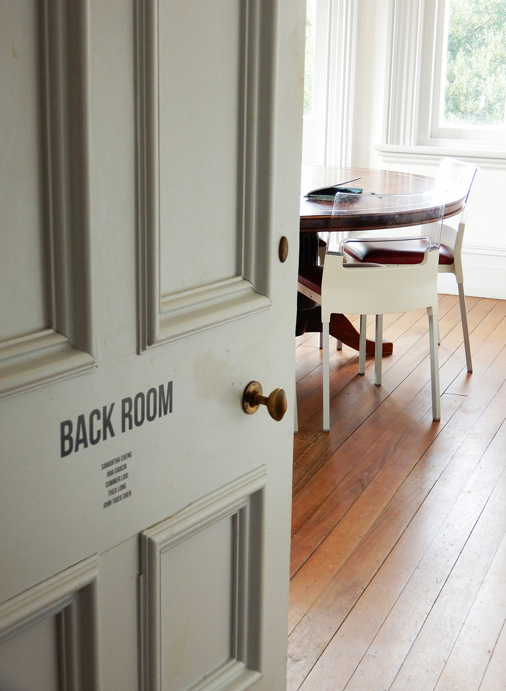
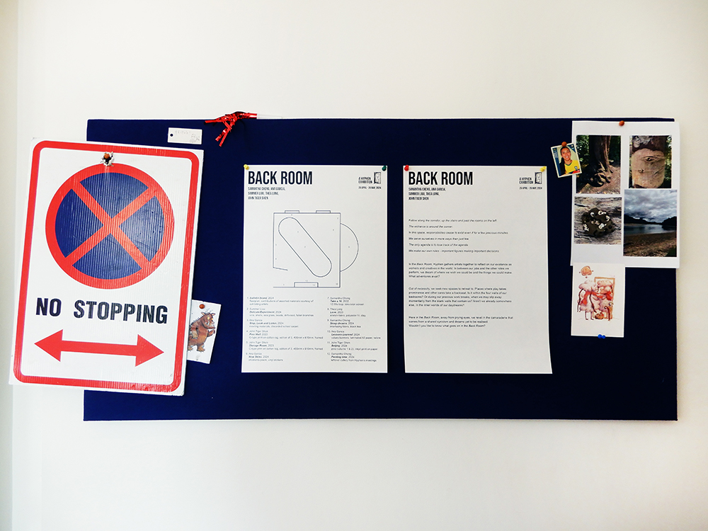
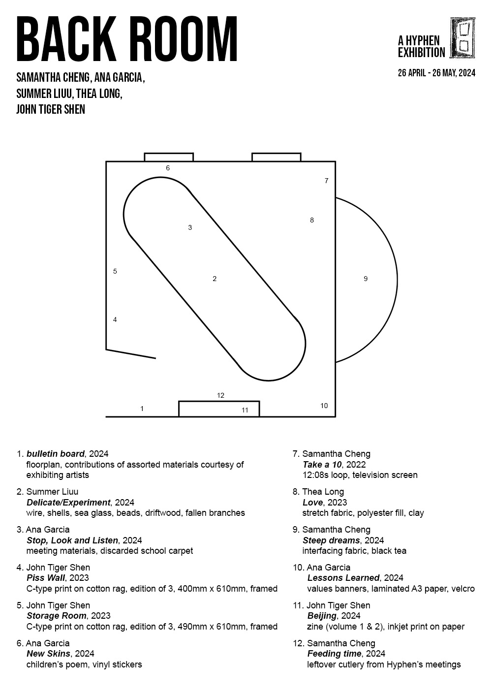
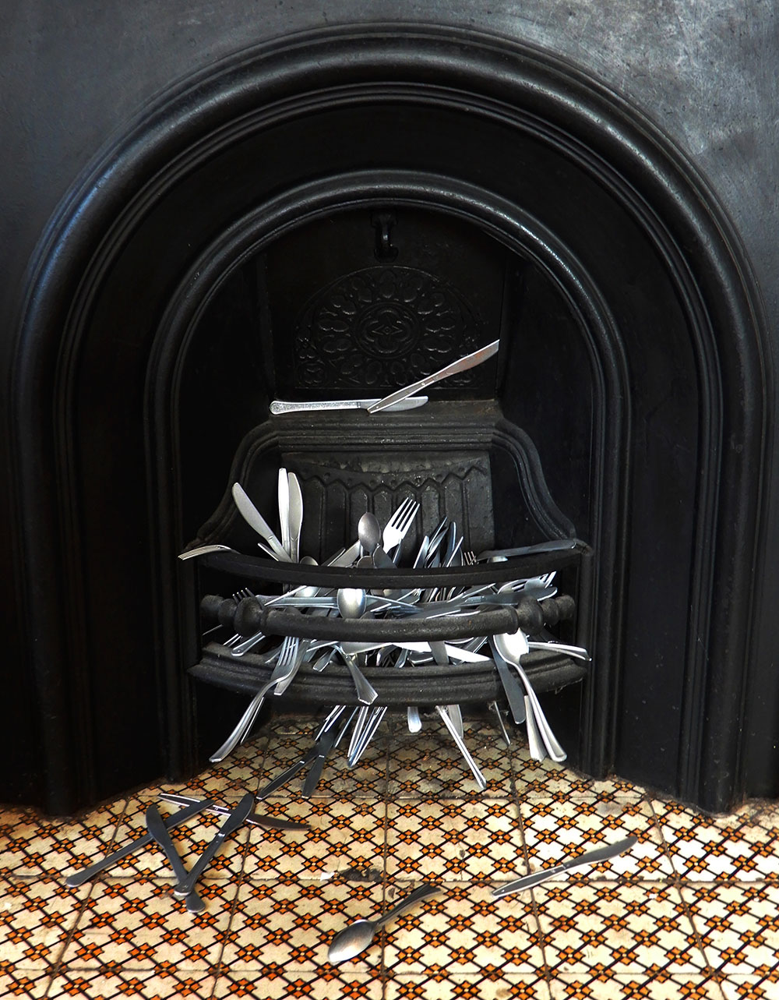
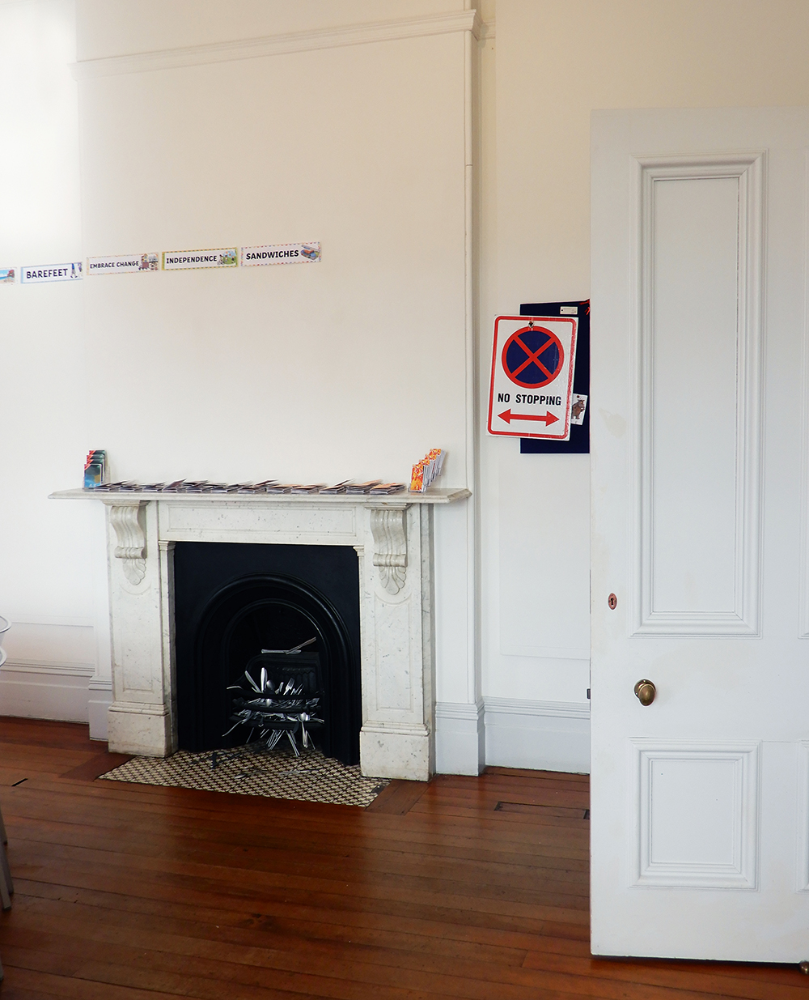
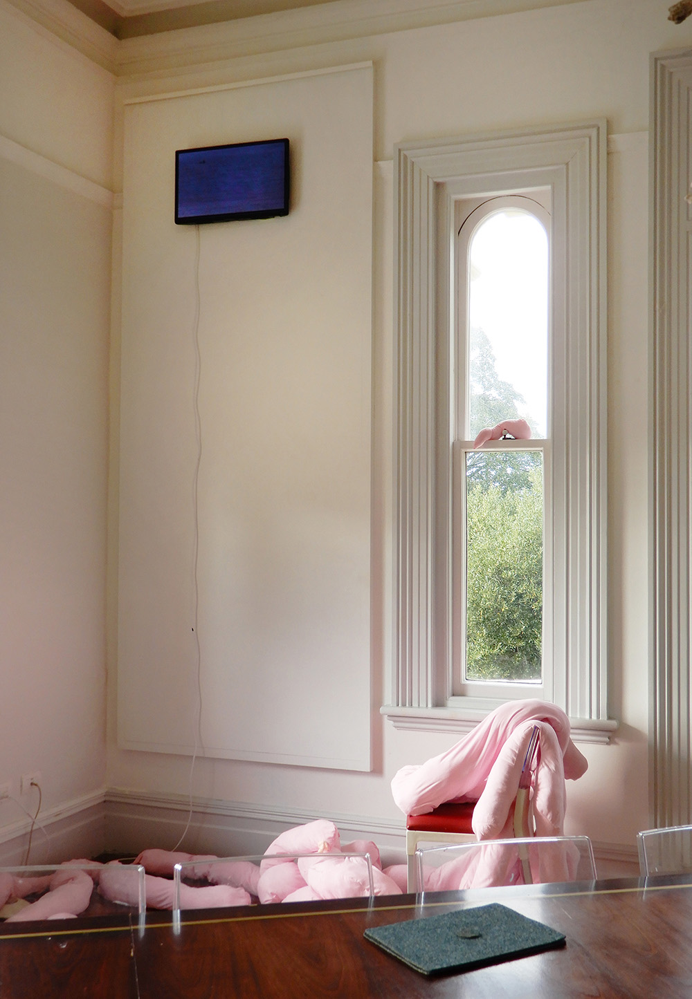

Samantha Cheng
Back Room
The Arts House Trust, Pah Homestead, 26 April - 26 May 2024
A
Hyphen exhibition
Follow along the corridor, up the stairs and past the rooms on the left.
The entrance is around the corner.
In this space, responsibilities cease to exist even if for a few precious minutes.
We serve ourselves in more ways than just tea.
The only agenda is to lose track of the agenda.
We make our own rules - important figures making important decisions.
In the Back Room,
Hyphen
gathers artists together to reflect on their existence as workers and creatives in the world. Out of necessity we seek new spaces to retreat to. Places where play takes prominence and other cares take a backseat. Here in the Back Room, away from prying eyes, workers revel in the camaraderie that comes from a shared cynicism and dreams yet to be realised. Wouldn’t you like to know what goes on in the Back Room?
*Images by the artist

Installation view of Steep dreams, April 2024

Installation view, April 2024

bulletin board, April 2024

Exhibition floorplan and list of works, April 2024

Installation view of Feeding time, April 2024

Installation view of bulletin board (exhibiting artists), Beijing (John Tiger Shen), Lessons Learned (Ana Garcia), and Feeding time, April 2024

Installation view of Stop, Look and Listen (Ana Garcia), Love (Thea Long), and Take a 10, March 2022